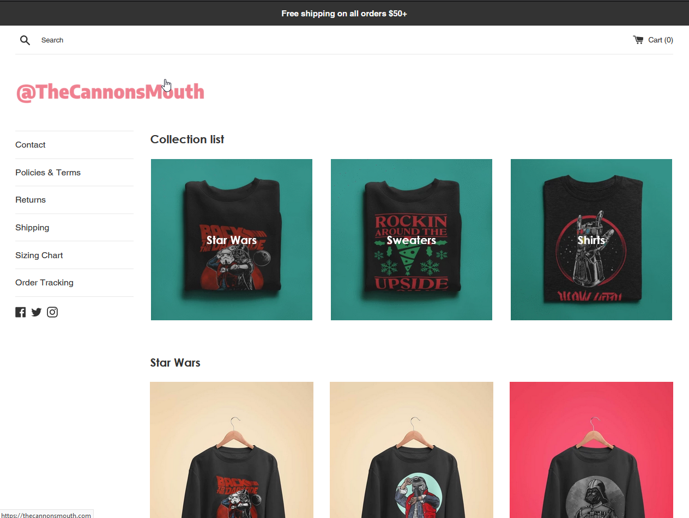
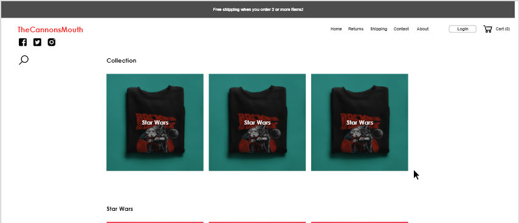
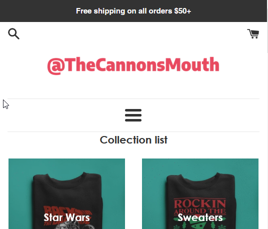
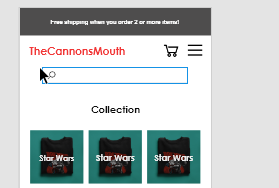
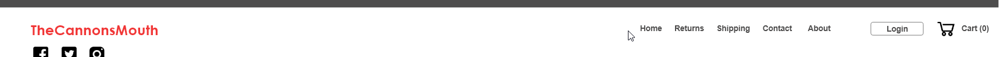
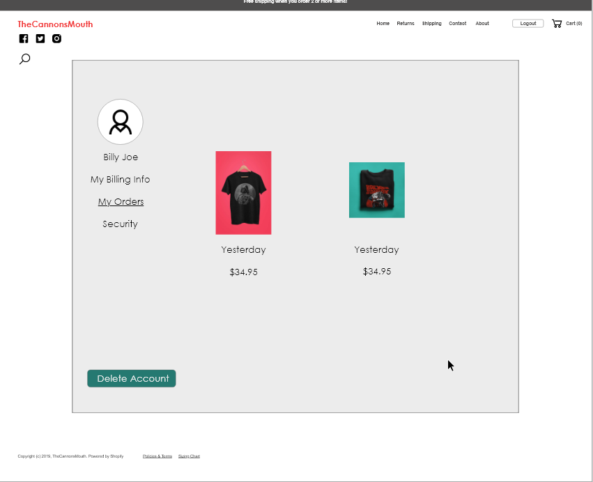

The site is fairly easy and standard to use. Aside from a few things, it's your standard
e-commerce site.
There is no account feature. I think that would help this site progress.
In order to have better consistency with other systems, I think that the menu would be
better positioned up on the top right or something of the sort. On mobile, a hamburger menu
would be ideal.
I like that search is where it is expected.
In Depth

Nothing to difficult to use, standard e-commerce site.
Search is in a good place but, I think it would be more beneficial to get rid of the line
that is
separating the top menu from the rest of the content.
That side menu, while being a decent place for it, I think would be better up top to better
other
systems. It can help keep with consistency that a majority of people expect from using a
website.

In my prototype, the menu is at the top where it is usually expected to be.
In this design, I also have a bit of a problem with where the menu is placed on mobile.
In my tests, I found that it was a bit more cumbersome to have it placed in the middle of the
page like and it takes up some real estate.

It is placed in kind of an unexpected place
I propose to change it to the below. The menu right up next to the cart. This has more of a
consistent feel and helps match up with other more familiar systems.

In my prototype, the menu bar does not have that horizontal rule at all

No horizontal rule and there is a login function
Something else I have noticed in my evalution is that there is no "my account" feature. I
feel
like this website would benefit from it because the user would have a place to keep
everything
stored.
Here is a rough idea of what the account page would like:

Account Page
Other features of this page would include moving the order tracking link here, custom sizing
chart and shipping rates.